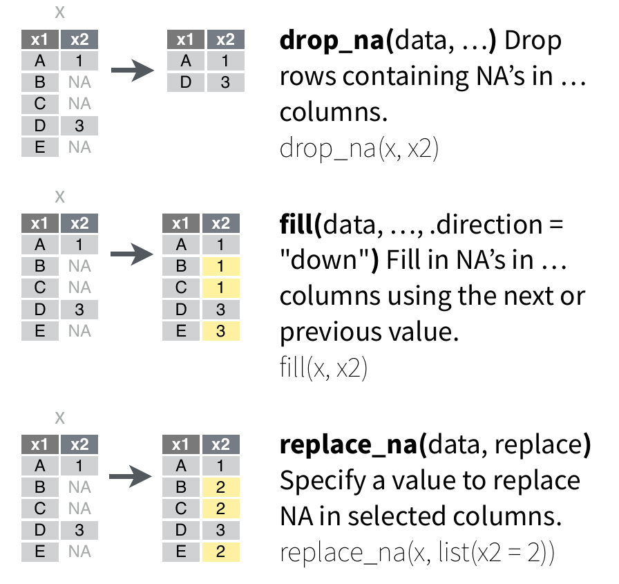

Introdução à Ciência de Dados no R
Aula 07 - Formatando Dados
Aula 07
Antonio Vinícius Barbosa
30-03-2023

Formatando Dados
Manipulação de Dados
Alguns importantes pacotes de manipulação de dados no R:
-
dplyr: pacote para tratamento e manipulação de bases de dados. -
tidyr: pacote para a formatação dos dados.
Estes e outros pacotes fazem parte de um sistema integrado de pacotes para ciência de dados conhecido por tidyverse, os quais compartilham de uma mesma concepção, gramática e funcionalidade.

O pacote tidyr
O pacote tidyr dispõe de funções bastante úteis para organizar os dados no formato necessário para a análise.

O pacote tidyr
As funções do pacote podem ser agrupadas em categorias:
- Pivoting: funções que convertem os dados para os formatos long ou wide.
- Nesting: funções que convertem dados agrupados de forma que cada grupo se transforma numa única linha.
- Combinando e separando colunas: funções que agregam ou separam colunas baseado em um padrão.
- Dados faltantes: funções que manipulam informações faltantes.
-
Completando dados: funções que transformam combinações implícitas em explícitas.
Pivoting
Pivoting
Existem dois tipos de formatação dos dados:

Pivoting
As principais funções para transformar os dados para formato long ou wide são:
-
pivot_longer(): empilha o banco de dados, deixando no formato longo (long). -
pivot_wider(): transforma o banco para um formato expandido (wide).

A função pivot_longer()
-
pivot_longer(): empilha o banco de dados, deixando no formato longo.
A função pivot_longer()
Neste exemplo, vamos criar um tibble:
A função pivot_longer()
Utilizando a função pivot_longer()
dados_uf_long <- dados_uf |>
pivot_longer(
cols = `2017`:`2019`,
names_to = "ano",
values_to = "valor"
)
dados_uf_long
## # A tibble: 9 × 3
## uf ano valor
## <chr> <chr> <dbl>
## 1 RJ 2017 23
## 2 RJ 2018 20
## 3 RJ 2019 28
## 4 SP 2017 45
## 5 SP 2018 38
## 6 SP 2019 36
## 7 PB 2017 19
## 8 PB 2018 17
## 9 PB 2019 20Tal formato é bastante utilizado para análises de unidades ao longo do tempo (por exemplo, em análises de dados de séries temporais ou dados em painel)
Quizz #1
Altere para long o formato do banco com informações do peso (em gramas) de recém nascidos, transformando apenas as variáveis contendo informações do peso, ordenados em ordem alfabética dos nomes:
peso_recem_nascido <- tibble(
nome = c("João", "Maria", "José", "Ana"),
sobrenome = c("Oliveira", "Duarte", "Silveira", "Cavalcante"),
sexo = c("M", "F", "M", "F"),
mes_0 = c(4300, 5240, 5180, 5450),
mes_1 = c(5300, NA, 6607, 6900),
mes_2 = c(4560, 6301, NA, 8765),
mes_3 = c(5003, NA, 6015, 6399)
)
peso_recem_nascido
## # A tibble: 4 × 7
## nome sobrenome sexo mes_0 mes_1 mes_2 mes_3
## <chr> <chr> <chr> <dbl> <dbl> <dbl> <dbl>
## 1 João Oliveira M 4300 5300 4560 5003
## 2 Maria Duarte F 5240 NA 6301 NA
## 3 José Silveira M 5180 6607 NA 6015
## 4 Ana Cavalcante F 5450 6900 8765 639905:00
Quizz #2
Neste exercício, retomaremos ao exemplo dos dados históricos do Índice Bovespa (Ibovespa) disponíveis no site da B3 http://www.b3.com.br/pt_br/market-data-e-indices/indices/indices-amplos/indice-ibovespa-ibovespa-estatisticas-historicas.htm
- Baixe os dados referente ao segundo semestre de 2022
- Leia os dados corretamente, transformando em um formato tidy.
- Transforme os dados para o formato long.
- [Desafio] Como você faria para colocar os dados em ordem cronológica crescente? (Ver documentação da função)
10:00
A função pivot_wider()
A função pivot_wider() transforma o banco para um formato expandido (wide)
A função pivot_wider()
Pra transformar do formato long para wide:
Quizz #3
- Utilize os dados
populationinseridos no pacotetidyratravés detidyr::population. - Salve os dados em um objeto.
- Transforme para o formato wide.
- Utilize o argumento
prefixpar adicionarano_antes do nome de cada coluna pivoteada.
05:00
Dados aninhados (nested data)
Dados aninhados são dados onde uma (ou mais) colunas é uma lista de data frames. Para entender esse conceito, vamos construir um banco de dados aninhados:
Dados aninhados são comuns para o formato JSON ou XML.
A função nest()
A função nest() permite criar dados aninhados simplesmente especificando quais colunas serão aninhadas
# Dados aninhados
peso_recem_nascido |>
nest(
historico_peso = starts_with("mes_")
)
## # A tibble: 4 × 4
## nome sobrenome sexo historico_peso
## <chr> <chr> <chr> <list>
## 1 João Oliveira M <tibble [1 × 4]>
## 2 Maria Duarte F <tibble [1 × 4]>
## 3 José Silveira M <tibble [1 × 4]>
## 4 Ana Cavalcante F <tibble [1 × 4]>A função unnest()
A função contrária de nest() é unnest()
A função separate()
A função separate() permite quebrar uma variável em duas ou mais colunas, de acordo com um padrão específico:
A função separate()
Suponha novamente a base de dados com informações de peso de recém nascidos, agora no formato long.
peso_recem_nascido |>
pivot_longer(
cols = contains("mes"),
names_to = "mes",
values_to = "peso"
)
## # A tibble: 16 × 5
## nome sobrenome sexo mes peso
## <chr> <chr> <chr> <chr> <dbl>
## 1 João Oliveira M mes_0 4300
## 2 João Oliveira M mes_1 5300
## 3 João Oliveira M mes_2 4560
## 4 João Oliveira M mes_3 5003
## 5 Maria Duarte F mes_0 5240
## 6 Maria Duarte F mes_1 NA
## 7 Maria Duarte F mes_2 6301
## 8 Maria Duarte F mes_3 NA
## 9 José Silveira M mes_0 5180
## 10 José Silveira M mes_1 6607
## 11 José Silveira M mes_2 NA
## 12 José Silveira M mes_3 6015
## 13 Ana Cavalcante F mes_0 5450
## 14 Ana Cavalcante F mes_1 6900
## 15 Ana Cavalcante F mes_2 8765
## 16 Ana Cavalcante F mes_3 6399A função separate()
A função separate() permite quebrar uma variável em duas ou mais colunas, de acordo com um padrão específico:
# Utilizando separate()
peso_recem_nascido |>
pivot_longer(
cols = contains("mes"),
names_to = "mes",
values_to = "peso"
) |>
separate(
col = mes,
into = c("unidade", "mes")
)
## # A tibble: 16 × 6
## nome sobrenome sexo unidade mes peso
## <chr> <chr> <chr> <chr> <chr> <dbl>
## 1 João Oliveira M mes 0 4300
## 2 João Oliveira M mes 1 5300
## 3 João Oliveira M mes 2 4560
## 4 João Oliveira M mes 3 5003
## 5 Maria Duarte F mes 0 5240
## 6 Maria Duarte F mes 1 NA
## 7 Maria Duarte F mes 2 6301
## 8 Maria Duarte F mes 3 NA
## 9 José Silveira M mes 0 5180
## 10 José Silveira M mes 1 6607
## 11 José Silveira M mes 2 NA
## 12 José Silveira M mes 3 6015
## 13 Ana Cavalcante F mes 0 5450
## 14 Ana Cavalcante F mes 1 6900
## 15 Ana Cavalcante F mes 2 8765
## 16 Ana Cavalcante F mes 3 6399A função unite()
Agora, suponha que queiramos juntar duas colunas em apenas uma. Para isso, podemos utilizar a função unite().
A função unite()
Seja a base de dados com informações de peso de recém nascidos. Caso queiramos juntar nome e sobrenome em uma mesma coluna, fazemos:
# Unir variaveis
peso_recem_nascido |>
unite(
nome:sobrenome,
col = nome_completo,
sep = " ",
remove = TRUE
)
## # A tibble: 4 × 6
## nome_completo sexo mes_0 mes_1 mes_2 mes_3
## <chr> <chr> <dbl> <dbl> <dbl> <dbl>
## 1 João Oliveira M 4300 5300 4560 5003
## 2 Maria Duarte F 5240 NA 6301 NA
## 3 José Silveira M 5180 6607 NA 6015
## 4 Ana Cavalcante F 5450 6900 8765 6399Quizz #4
Suponha uma base de dados com informações de notas de português e matemática para 3 unidades.
# Gerar numeros aleatorios replicaveis
set.seed(12345)
# Notas estudantes
notas_estudantes <- tibble(
estudante_id = 1:10,
port_1 = rnorm(10, 5, 1),
port_2 = rnorm(10, 6, 1),
port_3 = rnorm(10, 7, 1),
mat_1 = rnorm(10, 9, 1),
mat_2 = rnorm(10, 6, 1),
mat_3 = rnorm(10, 7, 1)
)
notas_estudantes
## # A tibble: 10 × 7
## estudante_id port_1 port_2 port_3 mat_1 mat_2 mat_3
## <int> <dbl> <dbl> <dbl> <dbl> <dbl> <dbl>
## 1 1 5.59 5.88 7.78 9.81 7.13 6.46
## 2 2 5.71 7.82 8.46 11.2 3.62 8.95
## 3 3 4.89 6.37 6.36 11.0 4.94 7.05
## 4 4 4.55 6.52 5.45 10.6 6.94 7.35
## 5 5 5.61 5.25 5.40 9.25 6.85 6.33
## 6 6 3.18 6.82 8.81 9.49 7.46 7.28
## 7 7 5.63 5.11 6.52 8.68 4.59 7.69
## 8 8 4.72 5.67 7.62 7.34 6.57 7.82
## 9 9 4.72 7.12 7.61 10.8 6.58 9.15
## 10 10 4.08 6.30 6.84 9.03 4.69 4.65Quizz #4
- Usar as funções do
tidyrpara obter a seguinte base:
## # A tibble: 30 × 4
## estudante_id unidade port mat
## <int> <chr> <dbl> <dbl>
## 1 1 1 5.59 9.81
## 2 1 2 5.88 7.13
## 3 1 3 7.78 6.46
## 4 2 1 5.71 11.2
## 5 2 2 7.82 3.62
## 6 2 3 8.46 8.95
## 7 3 1 4.89 11.0
## 8 3 2 6.37 4.94
## 9 3 3 6.36 7.05
## 10 4 1 4.55 10.6
## # … with 20 more rows- Gerar a base com as médias calculadas por aluno:
## # A tibble: 10 × 3
## estudante_id port mat
## <int> <dbl> <dbl>
## 1 1 6.42 7.80
## 2 2 7.33 7.92
## 3 3 5.87 7.68
## 4 4 5.50 8.31
## 5 5 5.42 7.48
## 6 6 6.27 8.08
## 7 7 5.75 6.98
## 8 8 6.00 7.24
## 9 9 6.48 8.83
## 10 10 5.74 6.1210:00
Manipulando dados faltantes
Para manipular dados faltantes, existem três funções importantes no pacote tidyr:
-
drop_na(): remove todas as linhas contendoNA -
fill(): substitui valoresNAbaseado nos valores anteriores ou posteriores -
replace_na(): especifica um valor específico para substituirNA
Manipulando dados faltantes
Manipulando dados faltantes
Considere os dados do históricos da B3 no formato long
A função drop_na()
Para remover todas as linhas contendo NA em uma ou mais colunas, fazemos:
# Dados B3
dados_b3 |>
drop_na()
## # A tibble: 274 × 3
## Dia mes indice
## <chr> <chr> <dbl>
## 1 3 Jan 103922.
## 2 4 Jan 103514.
## 3 5 Jan 101006.
## 4 6 Jan 101561.
## 5 7 Jan 102719.
## 6 10 Jan 101945.
## 7 11 Jan 103779.
## 8 12 Jan 105686.
## 9 13 Jan 105530.
## 10 14 Jan 106928.
## # … with 264 more rowsA função fill()
A função fill() substitui os valores NA com os valores anteriores ou posteriores
# Dados B3
dados_b3 |>
fill(
indice,
.direction = "down"
)
## # A tibble: 396 × 3
## Dia mes indice
## <chr> <chr> <dbl>
## 1 1 Jan NA
## 2 2 Jan NA
## 3 3 Jan 103922.
## 4 4 Jan 103514.
## 5 5 Jan 101006.
## 6 6 Jan 101561.
## 7 7 Jan 102719.
## 8 8 Jan 102719.
## 9 9 Jan 102719.
## 10 10 Jan 101945.
## # … with 386 more rowsA função replace_na()
A função replace_na() especifica um valor para substituir NA para cada coluna:
# Dados B3
dados_b3 |>
replace_na(
list(indice = 0)
)
## # A tibble: 396 × 3
## Dia mes indice
## <chr> <chr> <dbl>
## 1 1 Jan 0
## 2 2 Jan 0
## 3 3 Jan 103922.
## 4 4 Jan 103514.
## 5 5 Jan 101006.
## 6 6 Jan 101561.
## 7 7 Jan 102719.
## 8 8 Jan 0
## 9 9 Jan 0
## 10 10 Jan 101945.
## # … with 386 more rowsCompletanto Dados
Completanto Dados
Para entender os conceitos de completar informações faltantes na base de dados, considere as seguintes informações:
# Historico de corridas
dados_corridas <- tibble(
ano = c(2010, 2011, 2013, 2016, 2018, 2018, 2022),
tipo = c("meia maratona", "maratona", "meia maratona",
"10km", "10km", "meia maratona", "maratona"),
tempo_min = c(110, 230, 105, 50, 45, 100, 210)
)
dados_corridas
## # A tibble: 7 × 3
## ano tipo tempo_min
## <dbl> <chr> <dbl>
## 1 2010 meia maratona 110
## 2 2011 maratona 230
## 3 2013 meia maratona 105
## 4 2016 10km 50
## 5 2018 10km 45
## 6 2018 meia maratona 100
## 7 2022 maratona 210Os dados trazem informações sobre o histórico de corridas realizadas entre 2010 e 2022, para 3 categorias distintas.
A função complete()
A função complete() converte combinações implicitas em combinações explícitas. Por exemplo, supondo que desejamos obter todas as combinações de corridas durante os anos, fazemos:
# Expandir combinacoes
dados_corridas |>
complete(
ano, tipo
)
## # A tibble: 18 × 3
## ano tipo tempo_min
## <dbl> <chr> <dbl>
## 1 2010 10km NA
## 2 2010 maratona NA
## 3 2010 meia maratona 110
## 4 2011 10km NA
## 5 2011 maratona 230
## 6 2011 meia maratona NA
## 7 2013 10km NA
## 8 2013 maratona NA
## 9 2013 meia maratona 105
## 10 2016 10km 50
## 11 2016 maratona NA
## 12 2016 meia maratona NA
## 13 2018 10km 45
## 14 2018 maratona NA
## 15 2018 meia maratona 100
## 16 2022 10km NA
## 17 2022 maratona 210
## 18 2022 meia maratona NAPortanto, temos agora todas as combinações de tipos de corrida para os anos disponíveis nos dados.
A função complete()
Caso desejamos ampliar as combinações para todos os anos em um intervalo, fazemos:
# Expandir combinacoes
dados_corridas |>
complete(
ano = 2010:2022, tipo
)
## # A tibble: 39 × 3
## ano tipo tempo_min
## <dbl> <chr> <dbl>
## 1 2010 10km NA
## 2 2010 maratona NA
## 3 2010 meia maratona 110
## 4 2011 10km NA
## 5 2011 maratona 230
## 6 2011 meia maratona NA
## 7 2012 10km NA
## 8 2012 maratona NA
## 9 2012 meia maratona NA
## 10 2013 10km NA
## # … with 29 more rowsA função expand()
A função expand() é bastante similiar à complete(). A única diferença é que ela apresenta todas as combinações apenas das variáveis especificadas na função:
# Expandir combinacoes
dados_corridas |>
expand(
ano, tipo
)
## # A tibble: 18 × 2
## ano tipo
## <dbl> <chr>
## 1 2010 10km
## 2 2010 maratona
## 3 2010 meia maratona
## 4 2011 10km
## 5 2011 maratona
## 6 2011 meia maratona
## 7 2013 10km
## 8 2013 maratona
## 9 2013 meia maratona
## 10 2016 10km
## 11 2016 maratona
## 12 2016 meia maratona
## 13 2018 10km
## 14 2018 maratona
## 15 2018 meia maratona
## 16 2022 10km
## 17 2022 maratona
## 18 2022 meia maratonaA função crossing()
A função crossing() expande uma base de dados diretamente através de vetores, sem a necessidade de criar um data frame. Por exemplo, considere os 4 principais torneios de Grand Slam de tênis:
# Expandir com crossing
crossing(
anos = 1905:2023,
grand_slam = c("Australian Open", "Roland Garros",
"Wimbledon", "US Open")
)
## # A tibble: 476 × 2
## anos grand_slam
## <int> <chr>
## 1 1905 Australian Open
## 2 1905 Roland Garros
## 3 1905 US Open
## 4 1905 Wimbledon
## 5 1906 Australian Open
## 6 1906 Roland Garros
## 7 1906 US Open
## 8 1906 Wimbledon
## 9 1907 Australian Open
## 10 1907 Roland Garros
## # … with 466 more rows
ICDR